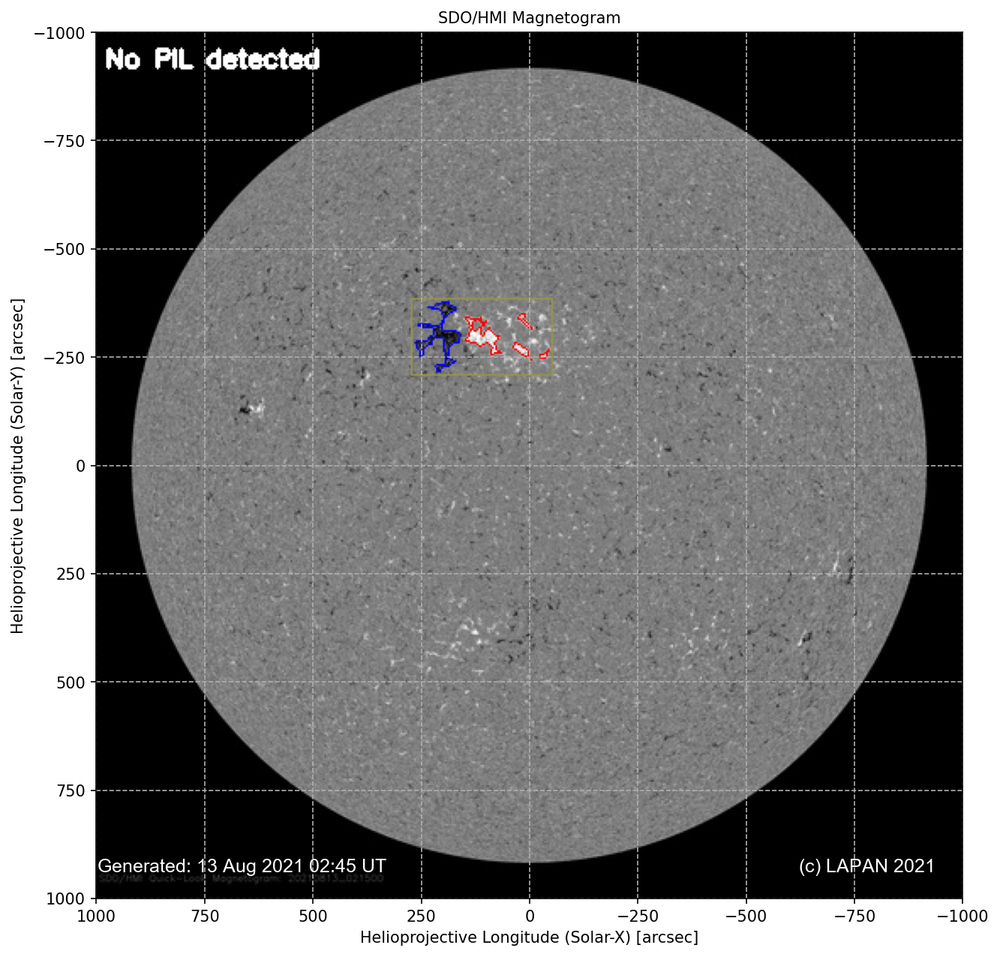
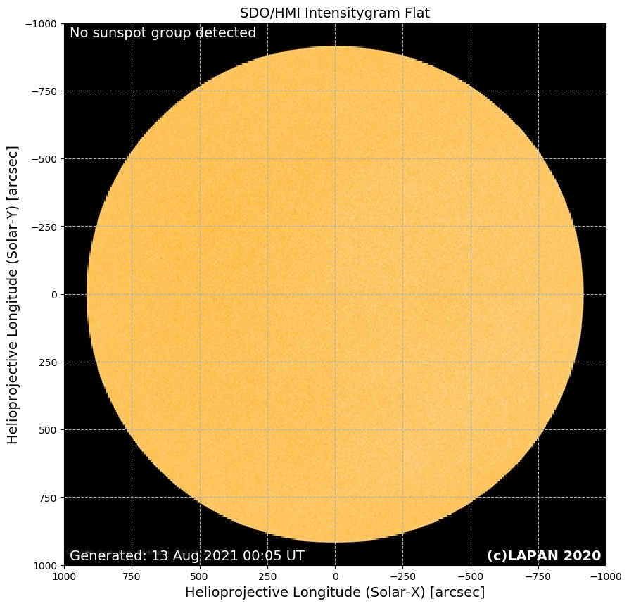
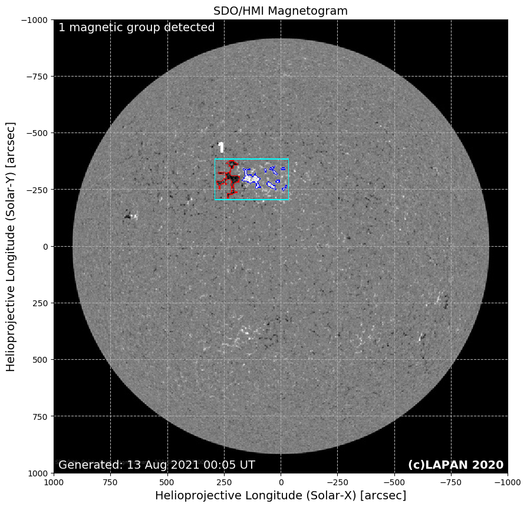
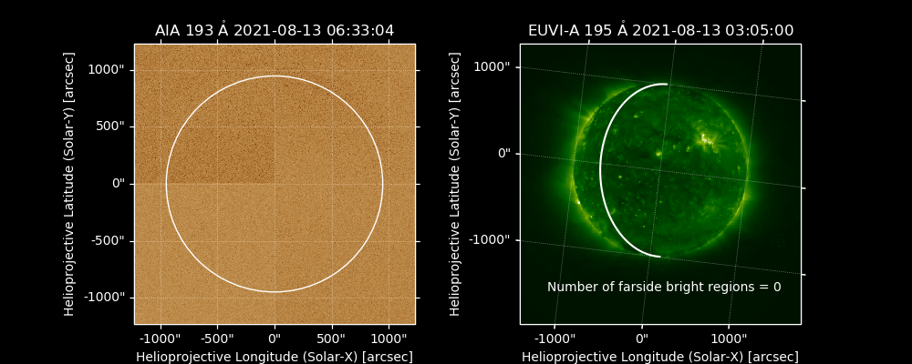
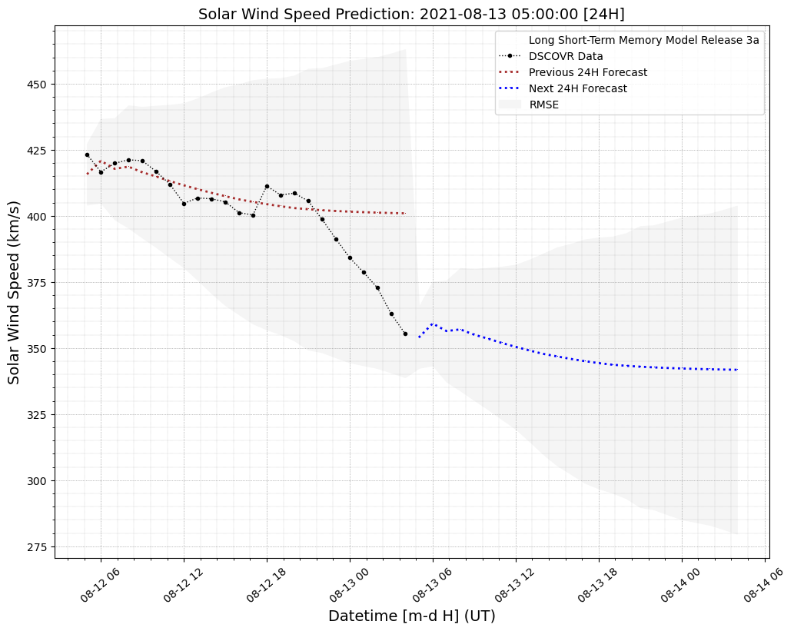

|
Deep Learning FlaMPP (Flare Prediction using Magnetogram Polarity Inversion Line) (Beta version)

The images above show the flare prediction according to NOAA scales for Solar Radioblackouts. Flare prediction conducted when Polarity Inversion Line (PIL) longer than 10 arcsec detected from SDO/HMI Magnetogram image. The flare prediction displayed in the upper right of the image. The detected PIL with its magnetic pair then numbered with the PIL length information in arcsec separate with semicolon displayed above the yellow-colored bounding box in the image. The “No” column in solar flare prediction is correspondent with the bounding box magnetic pair number. The total magnetic pair displayed on the upper left of the image, the positive polarity indicated by the blue contour, negative polarity indicated by the red contour, and PIL indicated by the green line.
Solar flare prediction is developed using mixed data input. Numerical input is the polarity area and the PIL length detected and extracted from the SDO/HMI Magnetogram. The image input obtained from the SDO/AIA193. The prediction conducted using Multi-Layer Perceptron (MLP) for the numerical input dan Convolutional Neural Network (CNN) for the image input.
The detection algorithm is heavily coded by A. Z. Utama. This image updated once a day at 0400UT.
SDO/HMI Magnetogram and SDO/AIA193 image are courtesy of NASA/SDO and the HMI science teams. Right-click and Open Image in New Tab for better image resolution.
Researcher in this section: T. Dani, S. Sulistiani, A.Z. Utama, S.K. Fatimah, G.P. Putri.
Sunspot and Magnetic Polarity Automatic Detection (Beta version) (Utama et al., In-Review)

The images above show the detection of the sunspot group from SDO/HMI Intensitygram instrument (left) and the detection of polarity pairs of the magnetic group and Polarity Inversion Line (PIL) (if any) from SDO/HMI Magnetogram (right). The detected sunspot group numbered and indicated by the red box with the total sunspot group displayed on the upper left of the image. As for the Magnetogram image, the detected magnetic pair numbered and indicated by the light-blue box with the total magnetic pair displayed on the upper left of the image. The positive polarity indicated by the blue contour, negative polarity indicated by the red contour, and PIL indicated by the green line.
The detection algorithm is heavily coded by A. Z. Utama. This image updated twice a day at 0000UT and 1200UT.
SDO/HMI Intensitygram and Magnetogram image are courtesy of NASA/SDO and the HMI science teams. Right-click and Open Image in New Tab for better image resolution.
Researcher in this section: T. Dani, S. Sulistiani, A.Z. Utama, S.K. Fatimah, G.P. Putri.
Flare Prediction Using Random Forest (Sulistiani & Dani, 2018)
Note:The flare prediction box is scrollable when overfull. Please clear cache in your browser if the forecast information not updating.
Solar Farside Bright Regions Automatic Detection (Nurzaman et al., In-Review)


Researcher in this section: J. Muhamad, R. Kesumaningrum, S. Sulistiani, M.Z. Nurzaman, A.D. Pangestu.
DeLuNa (Dani et al., 2019) and Solar Wind Speed Forecast using Deep Learning
The forecast algorithm is based on a Deep Learning using Long Short-Term Memory model. This model using input from the DeLuNa measurements of the geoeffective coronal hole area observed by SDO/AIA193 and the solar wind speed measurement at L1 point from NASA/NOAA DSCOVR satellites. Coronal hole feature recognition algorithms called DeLuNa, extract the geoeffective area of the coronal holes from SDO/AIA193 images.
Images below show the extraction of the coronal hole areas from SDO/ AIA193 instrument using DeLuNa (left) with the information of the coronal holes centroid location and the solar wind speed forecast (previous and the next 24 hours) together with the measured data from DSCOVR (right).
SDO/AIA193 image is courtesy of NASA/SDO and the AIA science teams. Solar wind data provided by NASA/NOAA DSCOVR satellites. The geoeffective coronal hole areas from SDO/AIA193 provided by DeLuNa LAPAN.
The DeLuNa coronal hole automatic detection is updated daily every 0100UT and 0700UT. As for the hourly 24-hours solar wind speed forecast is updated every 4-hours starting at 0000UT. (Note: There is a time delay since SDO data are not available in real-time).
Researcher in this section: T. Dani, R. Priyatikanto, A. Winarko, G.P. Putri, H. Sutastio.
| SDO/AIA193 | DSCOVR-PLASMA |
|---|---|
 |
 |
Left: The Sun observation from SDO/AIA193, the extracted coronal hole areas (green contours) and geoffective coronal hole areas (red dashed box) which are used for calculating the solar wind speed at 1AU. Right: The solar wind speed as measured by NASA/NOAA DSCOVR (black dotted with lines), previous 24 hours forecast (red dotted), and next 24 hours forecast (blue dotted).
Near-realtime Geoeffective Coronal Hole Areas vs Time
This D3.js based website visualize the changes of Geoeffective Coronal Hole Area based on DeLuNa LAPAN detection from SDO/AIA193 image. The chart is updated hourly. Press "Refresh" button on your browser to update the chart.
SDO/AIA193 image list obtained and downloaded automatically from NASA SDO/AIA193 website using Python. Then, DeLuNa automatically detected the Coronal Hole and measure it's geoeffective area.
The chart need an internet connection to displayed properly.
Researcher in this section: T. Dani, R. Priyatikanto, A. Winarko, G.P. Putri, H. Sutastio.
Copyright (c) LAPAN 2019. All rights reserved.